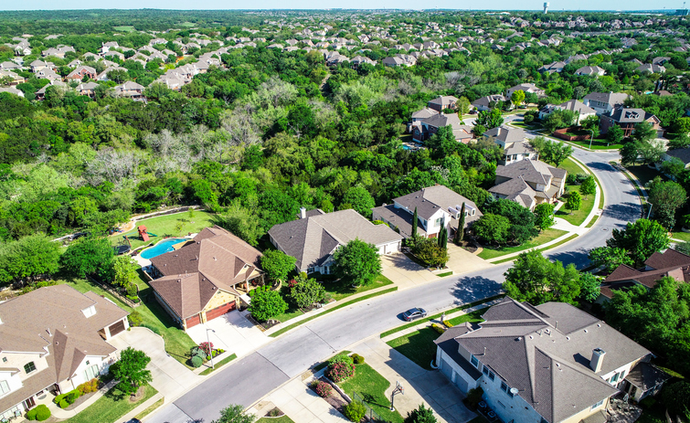

When your home suffers damage from a storm, fire, water leak, or mold, the stress doesn’t stop at the cleanup. For many homeowners, dealing with insurance companies can feel just as overwhelming as the disaster itself. At SWAT Restoration, we know how confusing this process can be—and we’re here to make it easier.
Filing an insurance claim after a disaster isn’t always straightforward. Policies are full of fine print, coverage limits vary, and the paperwork can seem endless. Meanwhile, you’re left wondering: Will my claim cover everything I need? How long will this take? Am I documenting things correctly?
That’s where having a restoration partner who understands both the work and the paperwork makes all the difference.
When you call SWAT Restoration, you’re not just getting a team to repair your home—you’re getting a partner who helps you every step of the way:
Every hour counts after a disaster, and every detail matters when dealing with insurance. By trusting SWAT Restoration, you get both fast, expert restoration and the peace of mind that comes from knowing your insurance process is being handled with care and professionalism.
Recovering from a disaster is stressful enough—you shouldn’t have to battle your insurance company, too. At SWAT Restoration, we combine skilled restoration services with hands-on insurance support to make sure your home and your life are restored as quickly and smoothly as possible.
If you’re facing storm, fire, water, or mold damage, call the first responders for disasters—SWAT Restoration. We’ll take care of the cleanup and